Recurrent Neural Network(RNN)
对单词的编码
- one hot （拉胯）
- Beyond for 1-of-N encoding
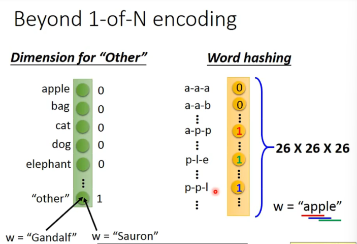
于是我们可以暴力使用feedforward network来做这件事情。用输出的分类概率来表示每个词语的slot。
但是有个问题，一个单词在不同的语境有不同的slot。
于是，我们希望模型是有记忆的，也就是可以根据上下文产生不同的output。（对同一input）
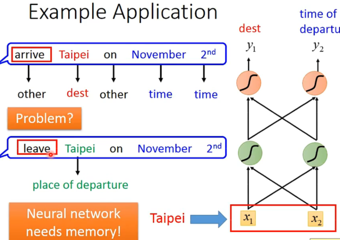
于是，这种有记忆的model被称作Recurrent Neural Network(RNN)。
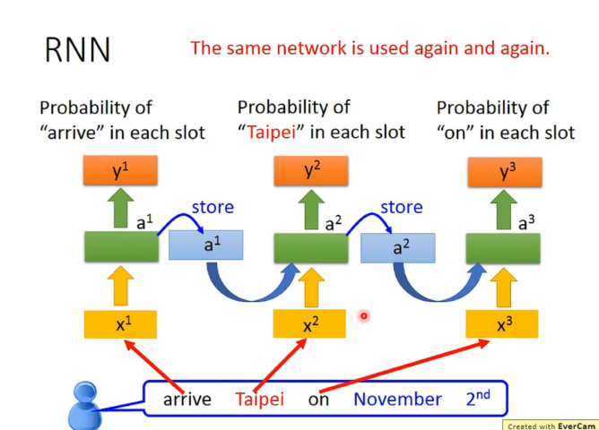
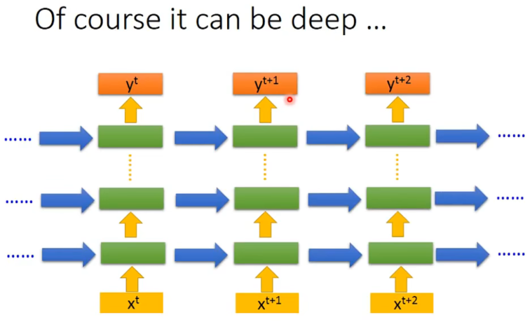
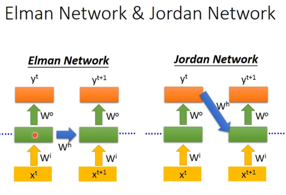
当然也可以是双向的。
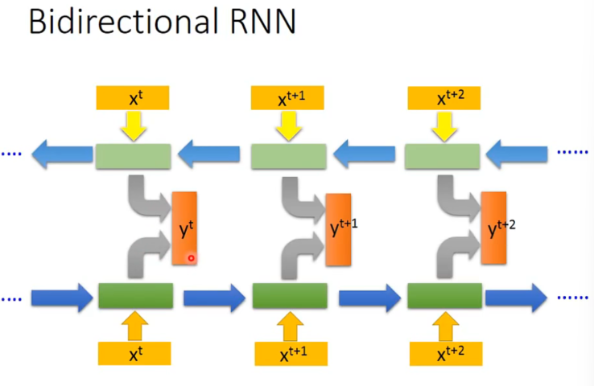
这样一来，产出时模型关注的范围就比较广了（单向->双向了） 。
常见的形式
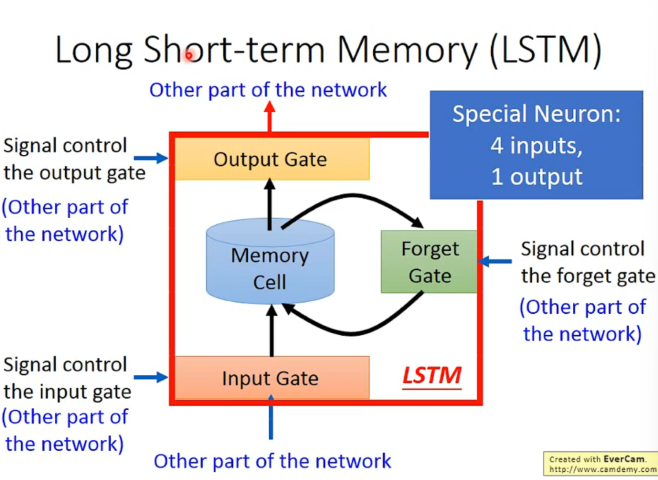
输入的参数还包括三个gate，分别是input gate, forget gate, output gate。
只要forget gate的值不为0，就会不更新memory cell的值，可以记得更久。
具体的一种实现：
(蓝红数字即weight和bios都是training得到的)
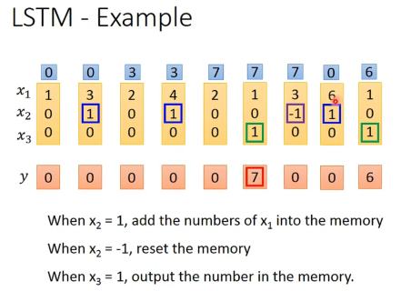
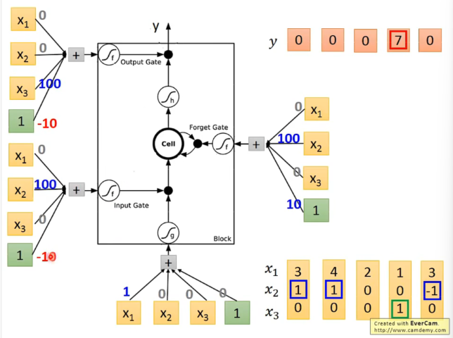
举例，当输入向量为
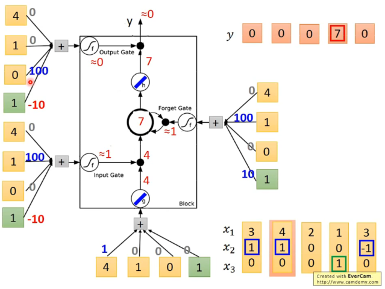
将LSTM运用刚在RNN里面。
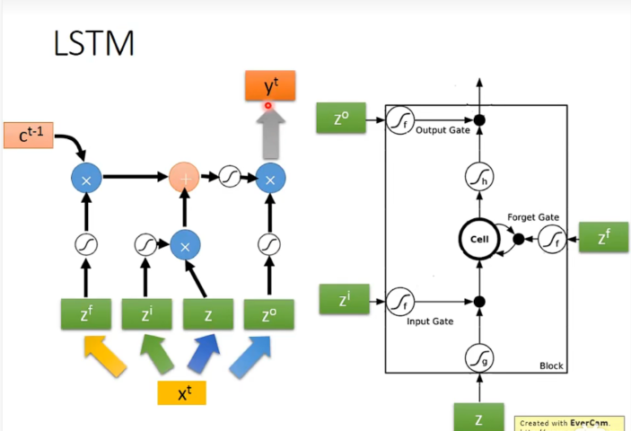
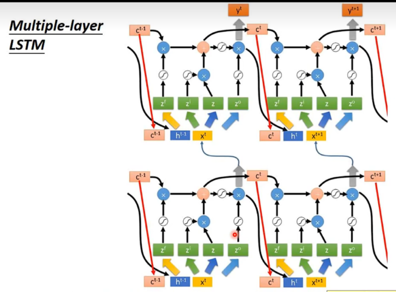
RNN遇到的一些问题
有时候loss会非常剧烈的抖动。
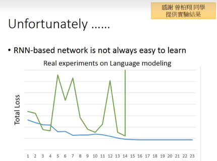
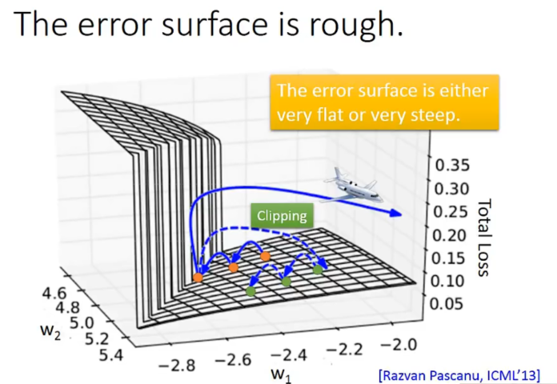
可能的原因：
因为幂次原因，learning rate太小太大都不会很好。
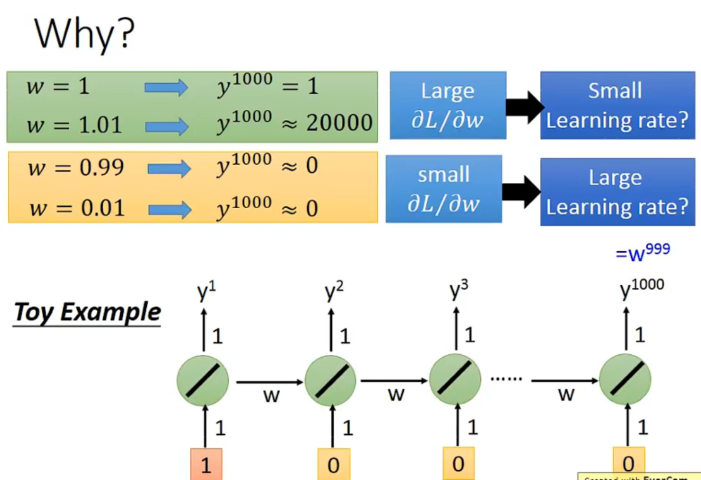
一种解决方法是使用Long Short Term Memory(LSTM)。其可以一定程度上避免gradient vanishing的问题。也就是说我们可以使用尽量小的learning rate。但是为什么呢？
LSTM和RNN在面对数据时处理的operation是不一样的：
Memory and input是相加的。
LSTM一旦对memory有影响，这个影响永远都会存在（除非被forget gate洗掉）。不像RNN会被format点。（就像一个重要的单词可以被长久的记住，也就更work，不会梯度消失不下降了）
RNN : more to one
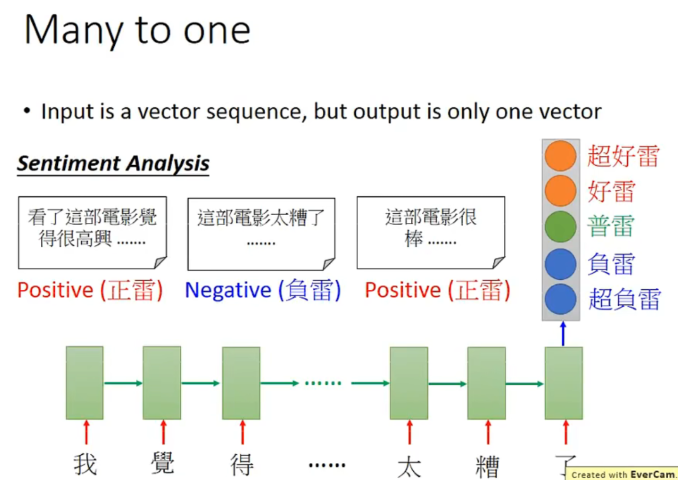
RNN ：Many to many
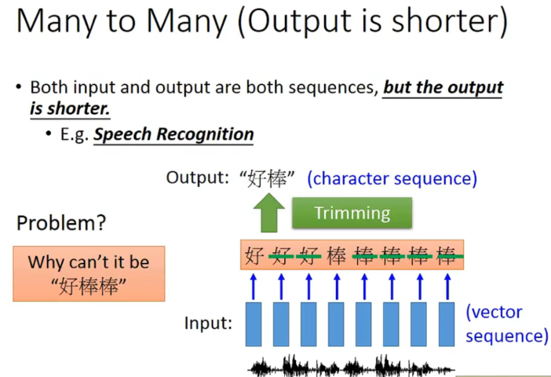
一种解决叠字的方法：
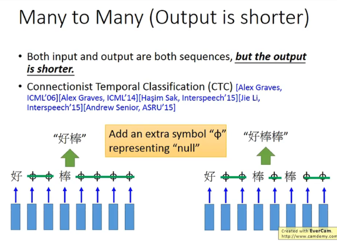
training的时候穷举一些null插入方法都认为是对的。（存在一些算法帮助找到这些null插入的方法）
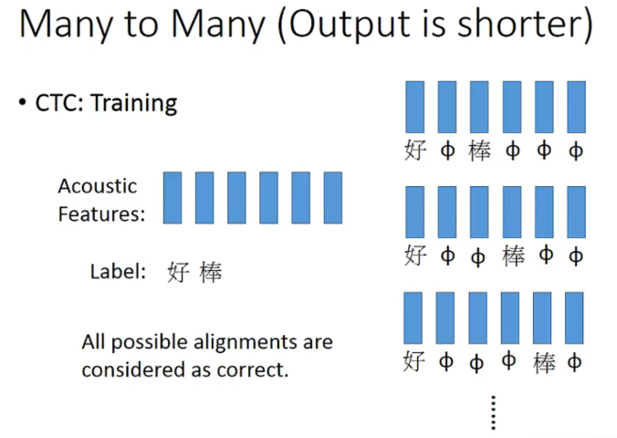
an example
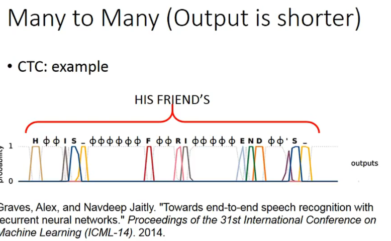
有关翻译的部分也是类似的。（input。output长度是no limitation）
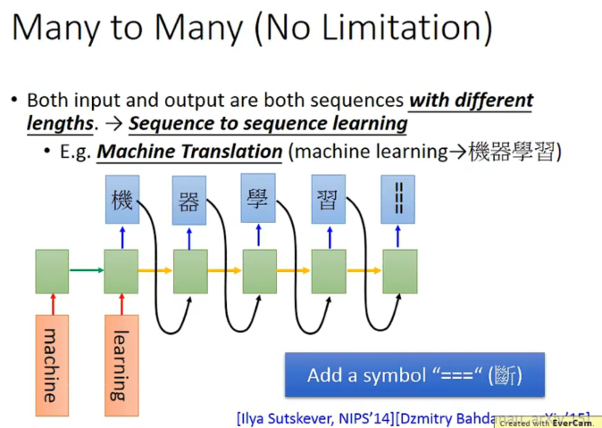
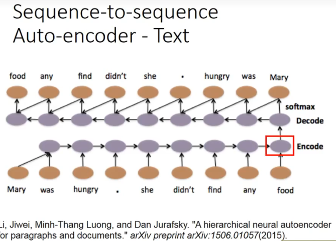
一些时候，语义是需要顺序的，所以我们用大量的数据，同时弄一个encode和decode，如果encode后的压缩编码可以被decode回来，说明encode的信息足够了。也就不会造成语义信息丢失或者误判。（input和output都期望是同一句话）
甚至，每一个小句子都可以有一个vector，可以变成高层的level，也就是encode变成了encode sentenece：
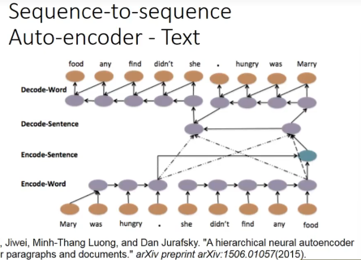
应用在语音上，可以把一段声音讯号变成一个vector。
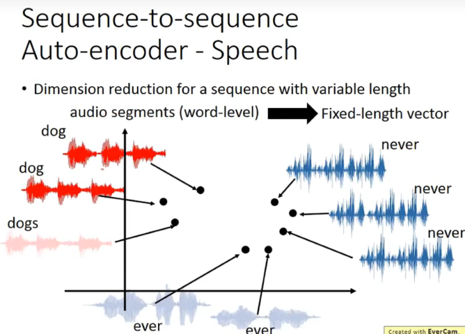
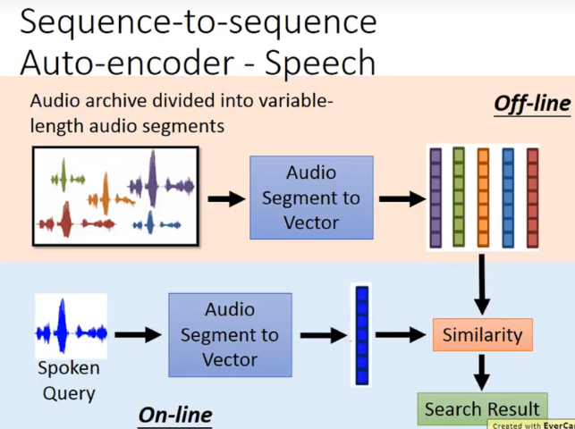
怎么做呢？如何把一个audio segment变成一个vector呢？
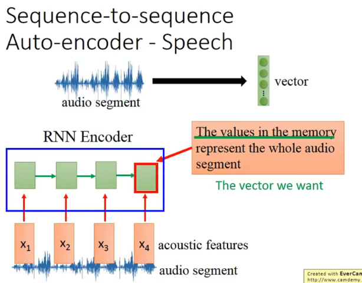
运用RNN作为encoder，最后在memory里的vector就是我们想要的vector。
然后在做一个decoder来训练，希望x和y越接近越好。也就是说encoder和decoder是一起train的。
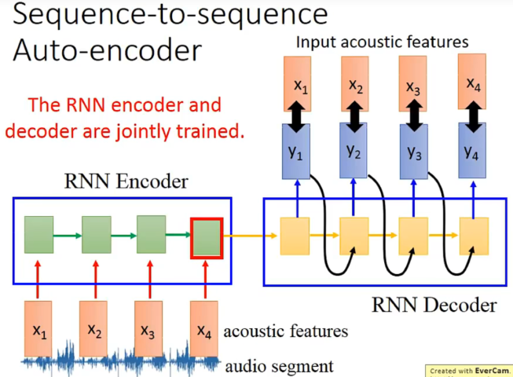
可视化的结果：
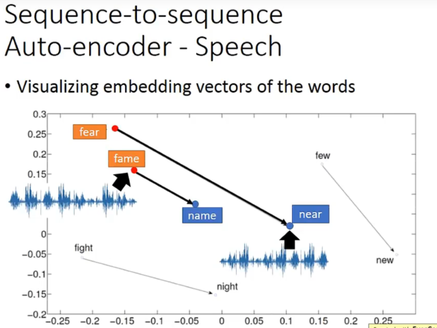
RNN 拓展应用
加了一个记忆化，然后多了个读写head，就变成了一个Turing Machine。
文本上
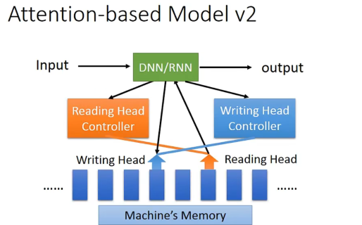
视觉上
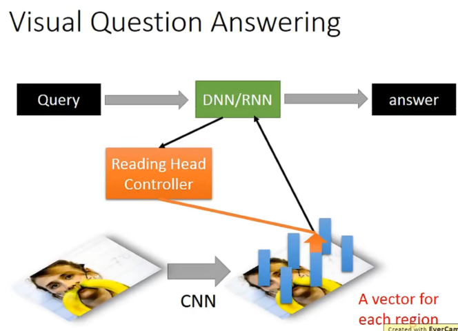
语音上：
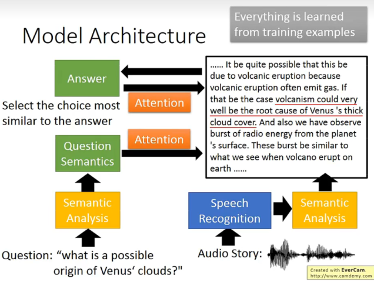
比较
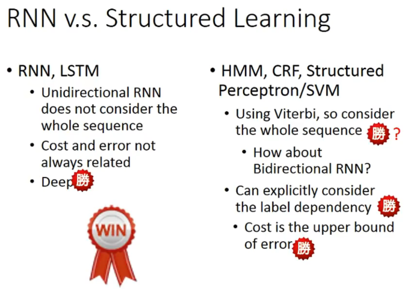